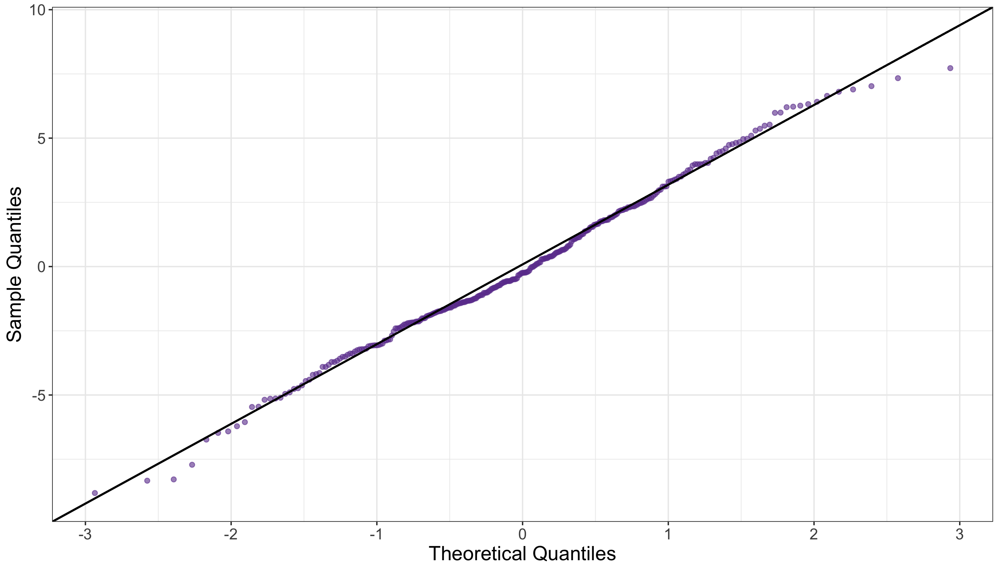
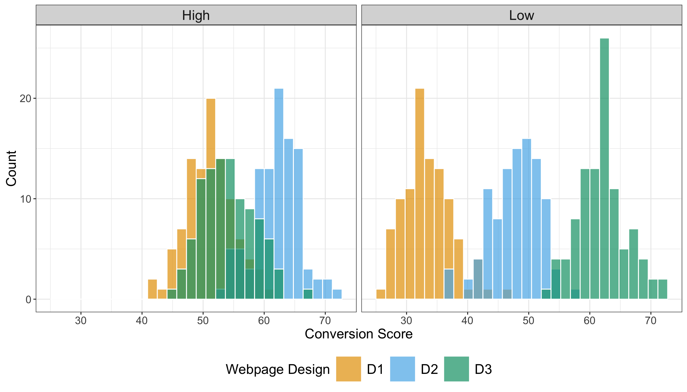
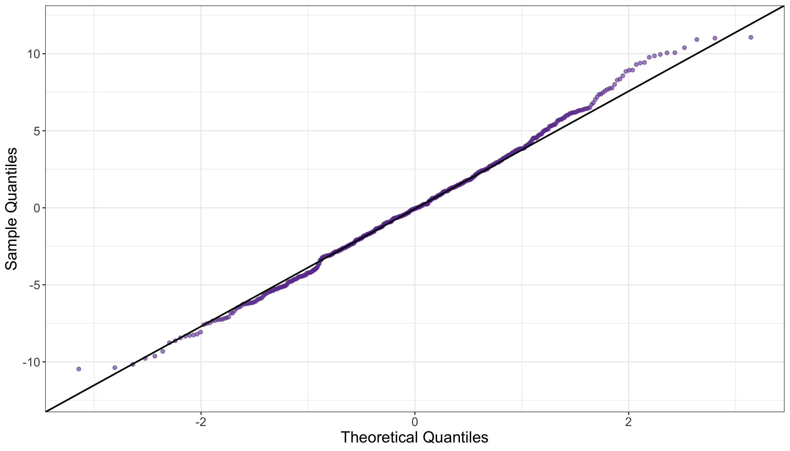

mindmap
root((Frequentist
Hypothesis
Testings
))
Simulation Based<br/>Tests
Classical<br/>Tests
(Chapter 2: <br/>Tests for One<br/>Continuous<br/>Population Mean)
(Chapter 3: <br/>Tests for Two<br/>Continuous<br/>Population Means)
(Chapter 4: <br/>ANOVA-related <br/>Tests for<br/>k Continuous<br/>Population Means)
{{Unbounded<br/>Responses}}
One<br/>Factor type<br/>Feature
)One way<br/>ANOVA(
Two<br/>Factor type<br/>Features
)Two way<br/>ANOVA(
(Chapter 5: <br/>Chi-squared<br/>Tests)
4 ANOVA-related Tests for \(k\) Continuous Population Means
Learning Objectives
By the end of this chapter, you will be able to:
- Explain how analysis of variance (ANOVA) partitions total variation into between-group and within-group components.
- Interpret the meaning of the \(F\)-statistic and its role in testing mean differences across groups.
- Describe the difference between main effects and interaction effects in a two-way ANOVA.
- Identify potential interaction patterns via appropriate plotting when conducting a two-way ANOVA.
- Conduct one-way and two-way ANOVA in a reproducible manner using the hypothesis testing workflow via
RandPython. - Identify the assumptions underlying one-way and two-way ANOVA, including independence, normality, and homoscedasticity.
- Evaluate model diagnostics to assess whether ANOVA assumptions are met.
It is time to expand our hypothesis testing framework from comparing two population means to a generalized approach for \(k\) population means by exploring analysis of variance (ANOVA) as shown in Figure 4.1. ANOVA is a foundational test in frequentist statistics designed to compare means across multiple populations under specific distributional assumptions, which we will examine in this chapter. Originally formalized by Ronald A. Fisher (Fisher 1925), ANOVA extends the concept of the two-sample \(t\)-test by partitioning the total variability of our outcome of interest into components attributable to main effects, interactions, and random error. This partitioning enables us to determine whether observed differences in groups are improbable to appear under the null hypothesis, which states that all groups share the same population mean.
Heads-up on some historical background in statistics!
While Ronald A. Fisher (1890–1962) is rightly recognized as a significant figure in modern statistics for developing key concepts such as ANOVA, it is imperative to recognize the broader context of his legacy. Beyond his pioneering contributions to statistics, Fisher was also a prominent advocate of eugenics, a movement that promoted pseudoscientific ideas about human heredity and social hierarchy. His involvement with the eugenics community is well documented (MacKenzie 1981). These views have been called out by certain members of the scientific community (Tarran 2020). That said, we (the authors of this mini-book) consider that students and scholars need to distinguish Fisher’s statistical insights from the unethical ideologies he supported, while also acknowledging the social responsibility to critique the historical misuse of science.
Fisher’s statistical work remains central to frequentist inference. However, educators and researchers must confront the historical connection between statistical innovation and eugenic thinking in early 20th-century science (Tabery and Sarkar 2015). By explicitly addressing this context, we can acknowledge the rigour of Fisher’s methodological contributions while rejecting the discriminatory worldviews he promoted. This approach aligns with contemporary efforts to ensure that teaching statistics is grounded not only in subject matter accuracy but also in ethical reflection and historical accountability (Kennedy-Shaffer 2024).
This chapter builds on the concepts introduced in the earlier works by Chapter 2 and Chapter 3, which concentrated on hypothesis testing for one and two groups, respectively. While those chapters primarily addressed pairwise comparisons, we will now shift our focus to multiple comparisons:
- The one-way ANOVA, discussed in Section 4.1, will assume a single categorical factor with \(k\) levels. This approach allows us to test whether at least one group mean is significantly different from the others.
- In contrast, the two-way ANOVA, from Section 4.2, will incorporate an additional categorical factor with \(m\) levels, permitting the analysis of both main effects and interaction effects. Interaction terms in ANOVA are especially useful for revealing cases where the effect of one factor depends on the level of another, a situation often encountered in complex experimental designs.
Heads-up on the importance of ANOVA in data science!
In modern data science, ANOVA remains significant, particularly in A/B/n testing (the generalization of A/B testing to multiple treatments). This approach allows for the simultaneous evaluation of various treatment variations or designs. ANOVA is valued for its interpretability and its flexibility in handling both balanced designs (where there is an equal number of replicates for each experimental treatment) and unbalanced designs (where there are unequal numbers of replicates). These strengths have solidified its role in both academic research and practical applications.
The simulated datasets discussed in this chapter relate to an experimental context known as A/B/n testing, which is an expansion of traditional A/B testing as previously discussed. In a typical A/B testing, participants are randomly assigned to one of two strategies, referred to as treatments: treatment \(A\) (the control treatment) and treatment \(B\) (the experimental treatment). This approach enables us to infer causation concerning the following inquiry:
Will changing from treatment \(A\) to treatment \(B\) cause my outcome of interest, \(Y\), to increase (or decrease, if that is the case)?
In an ANOVA setting, the outcome must be continuous. The primary goal of A/B testing is to determine whether there is a statistically significant difference between treatments \(A\) and \(B\) concerning the outcome. Additionally, because we are conducting a proper randomized experiment, we can infer causation (which goes further than mere association), as treatment randomization enables us to get rid of the effect of further confounders.
Heads-up on confounding!
In causal inference, confounding refers to the mixing of effects between the outcome of interest, denoted as \(Y\), the randomized factor \(X\) (which is a two-level factor in A/B testing, corresponding to treatment \(A\) and treatment \(B\)), and a third, uncontrollable factor known as the confounder \(C\). This confounder is associated with the factor \(X\) and independently affects the outcome \(Y\), as shown by Figure 4.2.
When conducting experiments with more than two treatments in A/B testing, the experiment is referred to as A/B/n testing. In this case, the “n” does not indicate the sample size; rather, it simply represents any number of additional treatments beyond treatments \(A\) and \(B\). With this clarification, we can now proceed with our two ANOVA cases (one and two-way) with their corresponding datasets to illustrate how this statistical approach can be applied via the structured test workflow from Figure 1.1 found in Section 1.1.
4.1 One-way ANOVA
Imagine you are part of a data-driven marketing team at a well-known tech company that operates a global online store. This store is heavily invested in using statistical experimentation on its website to enhance the customer shopping experience, with the goal of increasing profit margins in the long term. As part of this effort, the team frequently conducts A/B/n testings. These A/B/n testings specifically aim to increase the customer conversion score, which is the primary outcome measure. This continuous score is a unitless and standardized index of engagement, incorporating various elements such as clicks, time spent on the website, and the probability of making a purchase. The baseline of this score is set at \(50\). This score measures customer responsiveness on the online store: the higher the score, the greater the customer responsiveness.

To start with the first of these two A/B/n testings, let us suppose the heads of the marketing and sales departments have come up with the groundbreaking idea of modifying the overall webpage design in two different experimental ways to investigate whether these modifications somehow cause the mean customer conversion score to change. For the sake of this case, the department heads aim to compare how this score behaves between these two experimental webpage designs and the current webpage design.
4.1.1 Study Design
The first stage of our testing workflow involves the main statistical inquiry we aim to address. Therefore, let us translate the above situation into a concrete question that is meaningful for both the stakeholders (namely, the marketing and sales department heads) and for you as part of the data-driven marketing team. We can frame the main inquiry as follows:
Will the change across the two experimental webpage designs and the current design cause any statistical difference in the population mean customer conversion score?

This statistical inquiry represents the foundational step in our testing workflow. We transform a practical business question into a testable inferential statement (specifically, a causal one). By framing the problem as whether the average customer conversion score varies across different webpage designs, we connect stakeholder demands with statistical analysis.
In terms on how this A/B/n testing would be designed, let us consider the following aspects:
- The experiment will solely focus on webpage design, which we consider a controllable factor determined by the experimenter (that is you, as part of the data-driven marketing team). This factor includes three different webpage layouts (or designs): \(D_1\) (the current layout), \(D_2\) (a new and experimental layout), and \(D_3\) (another new and experimental layout). This setup creates a three-level factor. To summarize in statistical terms, we have:
- One factor: webpage design.
- Three treatments (the three layout options), which classifies this study as A/B/n testing. Treatment \(D_1\) is referred to as the control treatment, whereas \(D_2\) and \(D_3\) are the experimental treatments.
- The continuous outcome variable \(Y\), defined as the customer conversion score, which has been explained previously.
- Before conducting the experiment, assume that your team has performed a proper power analysis to determine the total sample size of customers to be recruited for the A/B/n testing. This power analysis has indicated an overall sample size of \(n = 600\) customers (namely, experimental units). Consequently, each treatment group will consist of \(\frac{n}{3} = 200\) customers, making this a balanced experiment.
Heads-up on the importance of having a balanced experiment!
In the design and analysis of experiments, having a balanced experiment (where each treatment receives the same number of experimental units) offers two advantages:
- Statistically, a balanced experiment helps minimize the uncertainty in estimating the population parameters necessary for hypothesis testing, which is essential for addressing our main statistical inquiries.
- On the other hand, from a practical point of view, a balanced experiment makes analysis robust against biased parameter estimation, which might be caused by an uneven exposure of experimental units to the different treatments.

4.1.2 Data Collection and Wrangling
Having designed our statistical experiment, it is now time to execute it, which we refer to as data collection. To ensure we accurately assess the causality of our statistical inquiry regarding changes in the population mean customer conversion score across three different webpage designs, we must randomly assign our \(n = 600\) experimental units evenly among the three treatments. This means we will collect \(\frac{n}{3} = 200\) data points for each treatment. To achieve this, we can use a suitable online tool to route website traffic uniformly, potentially employing stratified randomization based on additional covariates, such as device type and geographical location. This approach will help us allocate the \(n = 600\) experimental units to one of the three treatments effectively.
Heads-up on the importance of treatment randomization in statistical experimentation!
In A/B and A/B/n testing, online tools such as Optimizely and ABTasty enable experimenters to randomly assign web traffic units (i.e., experimental units) to different treatments of interest. These tools also offer several additional useful features, which are beyond the scope of this textbook.
Treatment randomization is a valuable statistical tool because:
- It ensures that, on average, observed and unobserved confounding variables are evenly distributed across treatments. This helps to avoid obtaining biased estimates of population parameters when evaluating causality between outcomes and the treatments of interest.
- As discussed further in Section 4.1.6, treatment randomization also guarantees that all observed data points are statistically independent concerning the random noise associated with their corresponding measurements. This statistical independence in the random noise (often referred to as the random component, which is also assumed to be identically distributed) is a critical assumption in ANOVA hypothesis testing. If these probabilistic assumptions are not met, the ANOVA test statistic and null distribution may not be appropriate for our observed data and inferential inquiries.

Let us discuss our data collection process. Assume you have already conducted this A/B/n testing and recruited \(n = 600\) customers for this experiment. These customers have been randomly assigned to one of the three webpage designs, and their conversion scores have been measured accordingly. To begin our inferential process, the following code snippets in R and Python will load the dataset, which contains the following columns:
-
webpage_design: A factor-type column representing the webpage design to which each experimental unit was assigned (\(D_1\), \(D_2\) or \(D_3\)). -
conversion_score: A numeric, continuous column that records the measured customer conversion scores as previously described at the beginning of this one-way ANOVA section.
# Importing library
import pandas as pd
# Loading dataset
OneWay_ABn_customer_data = pd.read_csv("data/ABn_customer_data_one_factor.csv")
# Showing the first 100 customers of the A/B/n testing
print(OneWay_ABn_customer_data.head(100))Tip on the generative modelling process for the simulated data!
We have already clarified that the datasets used in this chapter, such as OneWay_ABn_customer_data, are simulated. We chose this approach to explain ANOVA so that the data used in our test workflow meets the modelling assumptions. This ensures that we can provide a clear and comprehensive explanation for the reader on this inferential tool.
If you are interested in the generative modelling process for OneWay_ABn_customer_data and would like to reproduce it in either R or Python, please refer to Section B.3.1. It is worth noting that the datasets used in this chapter are the ones generated using R, as both R and Python use different pseudo-random number generators, even when using the same simulation seeds.
Now, after collecting the data, it is time to proceed with the data splitting into training and testing. For this specific case, assume the team in charge of this analysis decided to execute a 50-50 random data splitting which would yield a training set size of \(n_{\text{training}} = 300\) and testing set size of \(n_{\text{testing}} = 300\). Nevertheless, to keep the balanced nature of our experiment, we have to ensure that both sets will end up with 100 customers allocated to each one of the three treatments. Therefore, we need to implement a stratified randomization (where each treatment is a strata) as follows:
-
R: This code performs a stratified random split of theOneWay_ABn_customer_datadataset into training and testing sets, ensuring reproducibility and balance across different levels ofwebpage_design. The library {rsample} (Frick et al. 2025) is utilized for executing the stratified random split. Note that theset.seed()function is used to fix the random seed, allowing the results to be replicated. Then, theinitial_split()function divides theOneWay_ABn_customer_datainto two parts, allocating 50% for training and 50% for testing while maintaining proportional representation of each category in thewebpage_designvariable (thestrataargument ensures this). Thetraining()andtesting()functions extract the respective subsets from the split object. Lastly, to implement a sanity check, we retrieve the dimensions of each subset (number of rows and columns) and examine the relative proportions ofwebpage_designlevels within each split. This verification step ensures that the experimental treatments remain balanced in both training and testing sets, which is essential for unbiased modeling and valid inference in one-way ANOVA.

-
Python: The code executes a stratified data splitting process similar to itsRequivalent, utilizing thetrain_test_split()function from scikit-learn (Pedregosa et al. 2011). A fixed random seed is set using therandom_stateparameter to ensure reproducibility, so that each execution generates the same random partition. The dataset,OneWay_ABn_customer_data, is then divided into two equal subsets: 50% for training and 50% for testing. Thestratifyargument intrain_test_split()guarantees that thewebpage_designmaintains consistent proportional representation in both subsets, thus preserving balance across experimental treatments. After completing the split, we conduct the same sanity check as described above
# Loading library
library(rsample)
# Seed for reproducibility
set.seed(123)
# Randomly splitting into training and testing sets by webpage_design
OneWay_ABn_customer_data_splitting <- initial_split(OneWay_ABn_customer_data,
prop = 0.5, strata = webpage_design
)
# Assigning data points to training and testing sets
OneWay_ABn_training <- training(OneWay_ABn_customer_data_splitting)
OneWay_ABn_testing <- testing(OneWay_ABn_customer_data_splitting)
# Sanity check
cat("Training shape:", dim(OneWay_ABn_training), "\n")
cat("Testing shape:", dim(OneWay_ABn_testing), "\n\n")
cat("Training proportions:\n")
print(prop.table(table(OneWay_ABn_training$webpage_design)))
cat("\nTesting proportions:\n")
print(prop.table(table(OneWay_ABn_testing$webpage_design)))# Importing library
from sklearn.model_selection import train_test_split
# Seed for reproducibility
random_state = 123
# Randomly splitting into training and testing sets by webpage_design
OneWay_ABn_training, OneWay_ABn_testing = train_test_split(
OneWay_ABn_customer_data,
test_size=0.5,
stratify=OneWay_ABn_customer_data["webpage_design"],
random_state=random_state
)
# Sanity check
print("Training shape:", OneWay_ABn_training.shape)
print("Testing shape:", OneWay_ABn_testing.shape)
print("\nTraining proportions:")
print(OneWay_ABn_training["webpage_design"].value_counts(normalize=True))
print("\nTesting proportions:")
print(OneWay_ABn_testing["webpage_design"].value_counts(normalize=True))Training shape: 300 2 Testing shape: 300 2 Training proportions:
D1 D2 D3
0.3333333 0.3333333 0.3333333
Testing proportions:
D1 D2 D3
0.3333333 0.3333333 0.3333333 Training shape: (300, 2)Testing shape: (300, 2)
Training proportions:webpage_design
D2 0.333333
D3 0.333333
D1 0.333333
Name: proportion, dtype: float64
Testing proportions:webpage_design
D1 0.333333
D3 0.333333
D2 0.333333
Name: proportion, dtype: float644.1.3 Exploratory Data Analysis
# Loading library
library(tidyverse)
# Computing summaries
OneWay_summary_table <- OneWay_ABn_training |>
group_by(webpage_design) |>
summarise(
mean_conversion = round(mean(conversion_score), 2),
sd_conversion = round(sd(conversion_score), 2),
n = n()
) |>
arrange(webpage_design)
OneWay_summary_table# A tibble: 3 × 4
webpage_design mean_conversion sd_conversion n
<chr> <dbl> <dbl> <int>
1 D1 60.1 2.9 100
2 D2 60.4 3.05 100
3 D3 60.3 3.05 100# Importing library
import numpy as np
# Importing R training set via R library reticulate
OneWay_ABn_training = r.OneWay_ABn_training
OneWay_summary_table = (
OneWay_ABn_training
.groupby("webpage_design")
.agg(
mean_conversion=("conversion_score", lambda x: round(np.mean(x), 2)),
sd_conversion=("conversion_score", lambda x: round(np.std(x, ddof=1), 2)),
n=("conversion_score", "count")
)
.reset_index()
.sort_values("webpage_design")
)
OneWay_summary_table webpage_design mean_conversion sd_conversion n
0 D1 60.11 2.90 100
1 D2 60.35 3.05 100
2 D3 60.28 3.05 1004.1.4 Testing Settings
4.1.5 Hypothesis Definitions
4.1.6 Test Flavour and Components
# Loading library
library(broom)
# Running one-way ANOVA
OneWay_aov <- aov(conversion_score ~ webpage_design,
data = OneWay_ABn_testing
)
# Displaying full one-way ANOVA table
tidy(OneWay_aov) |>
mutate_if(is.numeric, round, 2)# A tibble: 2 × 6
term df sumsq meansq statistic p.value
<chr> <dbl> <dbl> <dbl> <dbl> <dbl>
1 webpage_design 2 0.49 0.24 0.03 0.98
2 Residuals 297 2901. 9.77 NA NA # Importing library
import statsmodels.api as sm
from statsmodels.formula.api import ols
# Importing R testing set via R library reticulate
OneWay_ABn_testing = r.OneWay_ABn_testing
# Running one-way ANOVA
OneWay_model = ols('conversion_score ~ C(webpage_design)', data=OneWay_ABn_testing).fit()
OneWay_aov = sm.stats.anova_lm(OneWay_model, typ=2)
# Displaying full one-way ANOVA table
OneWay_aov = OneWay_aov.round(2)
OneWay_aov sum_sq df F PR(>F)
C(webpage_design) 0.49 2.0 0.03 0.98
Residual 2900.76 297.0 NaN NaN4.1.7 Inferential Conclusions

# Extracting residuals
OneWay_resid <- residuals(OneWay_aov)
# Running Shapiro–Wilk test
OneWay_shapiro <- shapiro.test(OneWay_resid)
# Displaying outputs
tidy(OneWay_shapiro) |>
mutate_if(is.numeric, round, 2)# A tibble: 1 × 3
statistic p.value method
<dbl> <dbl> <chr>
1 0.99 0.3 Shapiro-Wilk normality test# Importing library
from scipy.stats import shapiro
# Extracting residuals
OneWay_resid = OneWay_model.resid
# Running Shapiro–Wilk tests
OneWay_shapiro = shapiro(OneWay_resid)
# Displaying outputs
OneWay_shapiro = pd.DataFrame({
"W Statistic": [round(OneWay_shapiro.statistic, 2)],
"p-value": [round(OneWay_shapiro.pvalue, 2)]
})
OneWay_shapiro W Statistic p-value
0 0.99 0.3# Loading library
library(car)
# Running Levene test
OneWay_levene <- leveneTest(conversion_score ~ as.factor(webpage_design),
data = OneWay_ABn_testing
)
# Displaying outputs
tidy(OneWay_levene) |>
mutate_if(is.numeric, round, 2)# A tibble: 1 × 4
statistic p.value df df.residual
<dbl> <dbl> <dbl> <dbl>
1 0.26 0.77 2 297# Importing library
from scipy.stats import levene
# Running Levene test
groups_OneWay = [group["conversion_score"].values for _, group in OneWay_ABn_testing.groupby("webpage_design")]
stat1, p1 = levene(*groups_OneWay)
# Displaying outputs
OneWay_levene = pd.DataFrame({
"Levene Statistic": [round(stat1, 2)],
"p-value": [round(p1, 2)]
})
OneWay_levene Levene Statistic p-value
0 0.26 0.774.1.8 Storytelling
4.2 Two-way ANOVA
4.2.1 Study Design
4.2.2 Data Collection and Wrangling
# Loading dataset
TwoWay_ABn_customer_data = pd.read_csv("data/ABn_customer_data_two_factors.csv")
# Showing the first 100 customers of the A/B/n testing
print(TwoWay_ABn_customer_data(100))# Seed for reproducibility
set.seed(123)
# Create a combined stratification variable
TwoWay_ABn_customer_data <- TwoWay_ABn_customer_data |>
mutate(strata = interaction(webpage_design, discount_framing))
# Randomly splitting into training and testing sets by both factors
TwoWay_ABn_customer_data_splitting <- initial_split(
TwoWay_ABn_customer_data,
prop = 0.5,
strata = strata
)
# Assigning data points to training and testing sets
TwoWay_ABn_training <- training(TwoWay_ABn_customer_data_splitting)
TwoWay_ABn_testing <- testing(TwoWay_ABn_customer_data_splitting)
# Sanity check
cat("Training shape:", dim(TwoWay_ABn_training), "\n")
cat("Testing shape:", dim(TwoWay_ABn_testing), "\n\n")
cat("Training proportions:\n")
print(prop.table(table(TwoWay_ABn_training$webpage_design, TwoWay_ABn_training$discount_framing)))
cat("\nTesting proportions:\n")
print(prop.table(table(TwoWay_ABn_testing$webpage_design, TwoWay_ABn_testing$discount_framing)))# Seed for reproducibility
random_state = 123
# Create a combined stratification variable
TwoWay_ABn_customer_data["strata"] = (
TwoWay_ABn_customer_data["webpage_design"].astype(str)
+ "_"
+ TwoWay_ABn_customer_data["discount_framing"].astype(str)
)
# Randomly splitting into training and testing sets by both factors
TwoWay_ABn_training, TwoWay_ABn_testing = train_test_split(
TwoWay_ABn_customer_data,
test_size=0.5,
stratify=TwoWay_ABn_customer_data["strata"],
random_state=random_state
)
# Sanity check
print("Training shape:", TwoWay_ABn_training.shape)
print("Testing shape:", TwoWay_ABn_testing.shape)
print("\nTraining proportions:")
print(TwoWay_ABn_training.groupby(["webpage_design", "discount_framing"]).size().div(len(TwoWay_ABn_training)))
print("\nTesting proportions:")
print(TwoWay_ABn_testing.groupby(["webpage_design", "discount_framing"]).size().div(len(TwoWay_ABn_testing)))Training shape: 600 4 Testing shape: 600 4 Training proportions:
High Low
D1 0.1666667 0.1666667
D2 0.1666667 0.1666667
D3 0.1666667 0.1666667
Testing proportions:
High Low
D1 0.1666667 0.1666667
D2 0.1666667 0.1666667
D3 0.1666667 0.1666667Training shape: (600, 4)Testing shape: (600, 4)
Training proportions:webpage_design discount_framing
D1 High 0.166667
Low 0.166667
D2 High 0.166667
Low 0.166667
D3 High 0.166667
Low 0.166667
dtype: float64
Testing proportions:webpage_design discount_framing
D1 High 0.166667
Low 0.166667
D2 High 0.166667
Low 0.166667
D3 High 0.166667
Low 0.166667
dtype: float644.2.3 Exploratory Data Analysis
# Computing summaries
TwoWay_summary_table <- TwoWay_ABn_training |>
group_by(webpage_design, discount_framing) |>
summarise(
mean_conversion = round(mean(conversion_score), 2),
sd_conversion = round(sd(conversion_score), 2),
n = n()
) |>
arrange(webpage_design, discount_framing)
TwoWay_summary_table# A tibble: 6 × 5
# Groups: webpage_design [3]
webpage_design discount_framing mean_conversion sd_conversion n
<chr> <chr> <dbl> <dbl> <int>
1 D1 High 66.1 3.79 100
2 D1 Low 48.5 3.89 100
3 D2 High 77.1 3.73 100
4 D2 Low 62.8 4.04 100
5 D3 High 69.1 4.27 100
6 D3 Low 77.0 3.91 100# Importing R training set via R library reticulate
TwoWay_ABn_training = r.TwoWay_ABn_training
# Computing summaries
TwoWay_summary_table = (
TwoWay_ABn_training
.groupby(["webpage_design", "discount_framing"])
.agg(
mean_conversion=("conversion_score", lambda x: round(np.mean(x), 2)),
sd_conversion=("conversion_score", lambda x: round(np.std(x, ddof=1), 2)),
n=("conversion_score", "count")
)
.reset_index()
.sort_values(["webpage_design", "discount_framing"])
)
TwoWay_summary_table webpage_design discount_framing mean_conversion sd_conversion n
0 D1 High 66.10 3.79 100
1 D1 Low 48.54 3.89 100
2 D2 High 77.07 3.73 100
3 D2 Low 62.83 4.04 100
4 D3 High 69.14 4.27 100
5 D3 Low 76.95 3.91 100

4.2.4 Testing Settings
4.2.5 Hypothesis Definitions
4.2.6 Test Flavour and Components
# Running two-way ANOVA
TwoWay_aov <- aov(conversion_score ~ webpage_design * discount_framing,
data = TwoWay_ABn_testing
)
# Displaying full two-way ANOVA table
TwoWay_aov <- tidy(TwoWay_aov) |>
mutate(across(where(is.numeric) & !matches("p.value"), ~ round(.x, 2)))
TwoWay_aov# A tibble: 4 × 6
term df sumsq meansq statistic p.value
<chr> <dbl> <dbl> <dbl> <dbl> <dbl>
1 webpage_design 2 26750. 13375. 817. 3.00e-171
2 discount_framing 1 8140. 8140. 497. 1.72e- 80
3 webpage_design:discount_framing 2 18207. 9103. 556. 7.93e-137
4 Residuals 594 9723. 16.4 NA NA # Importing R testing set via R library reticulate
TwoWay_ABn_testing = r.TwoWay_ABn_testing
# Running two-way ANOVA
TwoWay_model = ols('conversion_score ~ C(webpage_design) * C(discount_framing)', data=TwoWay_ABn_testing).fit()
TwoWay_aov = sm.stats.anova_lm(TwoWay_model, typ=2)
# Round all numeric columns except p-values
cols_to_round = [c for c in TwoWay_aov.columns if c != "PR(>F)"]
TwoWay_aov[cols_to_round] = TwoWay_aov[cols_to_round].round(2)
# Displaying full two-way ANOVA table
TwoWay_aov sum_sq df F PR(>F)
C(webpage_design) 26749.51 2.0 817.05 3.002041e-171
C(discount_framing) 8139.80 1.0 497.25 1.718558e-80
C(webpage_design):C(discount_framing) 18206.69 2.0 556.12 7.926552e-137
Residual 9723.46 594.0 NaN NaN4.2.7 Inferential Conclusions

# Extracting residuals
TwoWay_resid <- residuals(TwoWay_aov)
# Running Shapiro–Wilk test
TwoWay_shapiro <- shapiro.test(TwoWay_resid)
# Displaying outputs
tidy(TwoWay_shapiro) |>
mutate_if(is.numeric, round, 2)# A tibble: 1 × 3
statistic p.value method
<dbl> <dbl> <chr>
1 1 0.19 Shapiro-Wilk normality test# Extracting residuals
TwoWay_resid = TwoWay_model.resid
# Running Shapiro–Wilk tests
TwoWay_shapiro = shapiro(TwoWay_resid)
# Displaying outputs
TwoWay_shapiro = pd.DataFrame({
"W Statistic": [round(TwoWay_shapiro.statistic, 2)],
"p-value": [round(TwoWay_shapiro.pvalue, 2)]
})
TwoWay_shapiro W Statistic p-value
0 1.0 0.19# Loading library
library(car)
# Running Levene test
TwoWay_levene <- leveneTest(conversion_score ~ as.factor(webpage_design) * as.factor(discount_framing),
data = TwoWay_ABn_testing
)
# Displaying outputs
tidy(TwoWay_levene) |>
mutate_if(is.numeric, round, 2)# A tibble: 1 × 4
statistic p.value df df.residual
<dbl> <dbl> <dbl> <dbl>
1 1.92 0.09 5 594# Running Levene test
TwoWay_ABn_testing["group"] = TwoWay_ABn_testing["webpage_design"].astype(str) + "_" + TwoWay_ABn_testing["discount_framing"].astype(str)
groups_TwoWay = [group["conversion_score"].values for _, group in TwoWay_ABn_testing.groupby("group")]
stat1, p1 = levene(*groups_TwoWay)
# Displaying outputs
TwoWay_levene = pd.DataFrame({
"Levene Statistic": [round(stat1, 2)],
"p-value": [round(p1, 2)]
})
TwoWay_levene Levene Statistic p-value
0 1.92 0.09